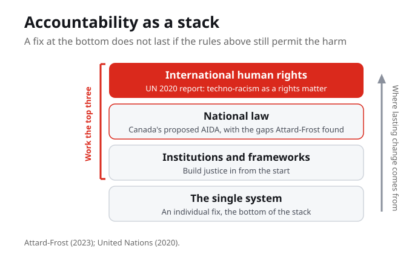
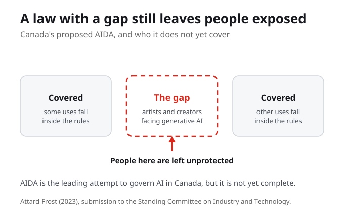
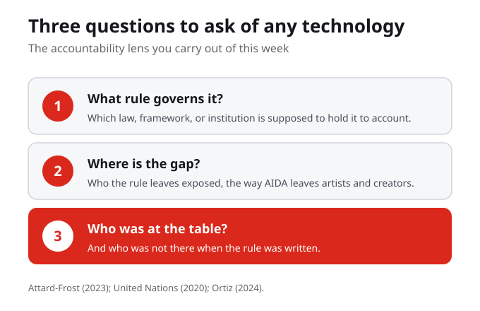

Picture accountability as a stack. At the bottom is the single system, where the course began. Above it are institutions and frameworks. Above that is national law, where Canada's proposed Artificial Intelligence and Data Act sits. At the top is international human rights, where the United Nations treats techno-racism as a rights matter. An individual fix does not last if the rules above it still permit the harm, so this week we work the top three levels of the stack.
An individual fix does not last if the rules above it still permit the harm. That is why accountability has to climb the stack, from the single system up to institutions, national law, and international human rights.
Why are individual fixes not enough when the rules themselves permit the harm?
Last week you proposed responses to single systems. A good fix is real, but it is fragile if the rules still permit the harm. The next company can ship the same design, and a fix that is legal to ignore stays optional. That is the move this week makes: from fixing one tool to changing the rules that govern every tool like it.
A single good fix can be perfectly legal to ignore. If the rules permit the harm, accountability has to climb above the individual system, or every fix you proposed last week stays optional.

In Canada, the proposed Artificial Intelligence and Data Act, known as AIDA, is the leading national attempt to govern AI. In 2023 Blair Attard-Frost made a brief to the Standing Committee on Industry and Technology that documented real gaps in it, including weak protection for artists and creators facing generative AI. A law can exist, and still leave people exposed through the holes in it.
AIDA is Canada's leading attempt to govern AI, yet Attard-Frost documented real gaps, including weak protection for artists and creators facing generative AI. A law with a gap still leaves people exposed.
Attard-Frost documents gaps in Canada's draft AI law. What is one gap, and who does it leave unprotected?
It is tempting to read a gap in a law as a failure of detail, something the drafters simply missed. But a gap also tells you whose harm the rule was not written to count. When you study any policy this week, treat its gaps as evidence: not just what the rule covers, but who it quietly leaves out, and who is exposed as a result.
A law can exist, get praised as leadership, and still leave whole groups exposed through its gaps. The gaps are not failures of detail; they are quiet decisions about whose harm does not count.

Above national law sits international human rights. In a 2020 report, the United Nations Special Rapporteur on contemporary forms of racism analysed racial discrimination in emerging digital technologies as a human rights matter. That naming does work. Calling techno-racism a rights violation, rather than a technical glitch, creates obligations on states and gives affected communities a stronger basis to demand change.
This is the difference between an apology and an obligation. Calling techno-racism a glitch asks a company to please do better; calling it a rights violation makes a state legally answerable.
The UN frames techno-racism as a human rights issue. What changes when the harm is named as a rights violation rather than a glitch?
There is a further move beyond writing better rules after the fact. Building justice in from the start means accountability is designed into a system from the beginning, with the communities most affected at the table, rather than added after harm has already happened. It is the governance counterpart to last week's design justice: not only how we build a tool, but how we govern it, and with whom.
This is last week's design justice grown up into governance. The same refusal at a bigger scale: not only how do we fix the gate, but who governs whether the gate is built at all.
There are two timing choices for accountability, and they produce very different systems. You can regulate after the fact: wait for harm, then write the rules, by which point the technology is already entrenched and the company sets the terms. Or you can build justice in: design and govern with those affected from the beginning. The timing is not a technical detail; it decides who holds the power.
The timing choice is really a power choice. Regulate after sounds reasonable, but by then the technology is entrenched. Waiting is never neutral; delay favours whoever is already winning.
For a system you know, would regulating after the fact or building justice in from the start have protected people more, and why?
When you study any rule or framework this week, ask the same questions of it. What harm is it meant to prevent, and whose harm? Where are the gaps, and who do they leave exposed? Who was at the table when it was written, and who was not? These questions are one tool, and they all point the same way: follow the power.
These questions are a single tool: follow the power. Gaps, the missing people at the table, and the unprotected groups all point to the same thing, who the rule was written to serve.
Take a rule you actually trust and run these questions on it. Who does it serve, and who is left out?
Draw the three frameworks together and a just policy future starts to take shape. It would not wait for harm and then patch it. It would put affected communities at the table when rules are written, not only after. It would make techno-racism an enforceable rights violation, with real redress, and build accountability into systems from the start. That is not nicer technology; it is a different set of hands on the controls.
Read this as the course's answer, not a wish list. Communities at the table, enforceable rights, justice built in: each names a power that has to move. A just future is a different set of hands on the controls.
So when you meet a technology, ask three things. What rule governs it. Where the gap is. And who was, and was not, at the table when the rule was written. This week you add a policy entry to your Living Cartography: choose a technology you have mapped, name the rule that governs it, the gap in that rule, and who should be at the table to close it. Keep it privacy-safe, and prefer public laws, reports, and frameworks as your sources.
Public laws and reports are the right sources here because accountability has to be something others can check and enforce. A harm no one can name in public record is a harm with no leverage behind it.
For a technology you use, what rule or policy would you change, and who would have to be at the table for that change to be real?
Notice the range of this week. A national law, a United Nations body, and a decolonial framework are three very different scales answering one question. That range is the argument. Techno-racism cannot be governed at a single level, because it operates at all of them, from the single system at the bottom to international human rights at the top. As you return to your own map, ask how your sense of who should decide has changed since Week 1.
Three sources span a national law, a UN body, and a decolonial framework. That range is the argument: techno-racism cannot be governed at a single level, because it operates at all of them.